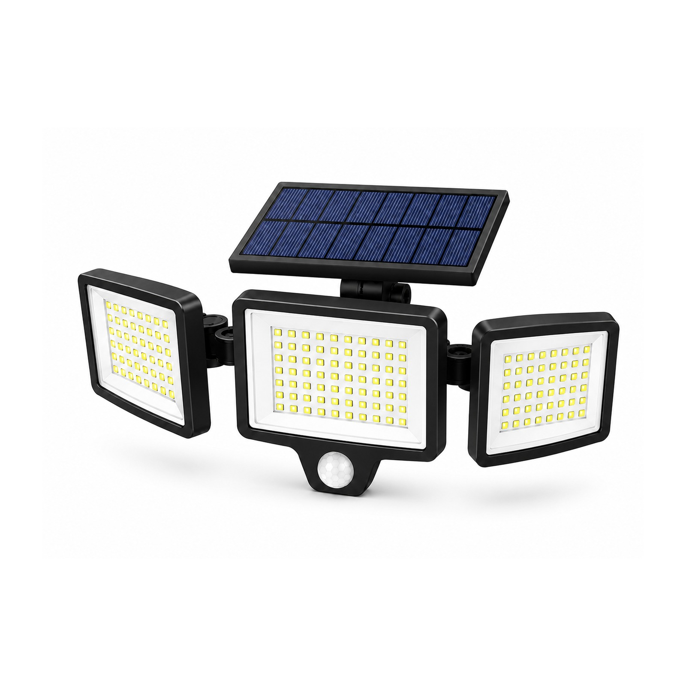

How to Choose Solar Flood Lights for Security
A solar flood light only deters intruders if it lights the right area, at the right moment, through the worst week of the year. Specifying one for security comes down to six decisions — here's how to get them right.

A solar flood light secures a wall, yard or forecourt with no wiring, no trenching and no electricity bill — and it keeps working through a blackout, which is exactly when intruders are most active. But "solar flood light" spans everything from an 800-lumen wall light to a multi-head fixture throwing several thousand lumens across a compound. Here's how to specify the right one for the job.
1. Match lumens to the area you're protecting
Start with the area, not the wattage. As a rough guide: a doorway, gate or short wall is well covered by roughly 800–1,500 lm; a driveway, yard or shopfront by 1,500–2,500 lm; and a large compound, warehouse forecourt or building facade by 2,500 lm and up — often best served by a multi-head fixture that splits output across several directions. Over-spec and you pay for glare you don't need; under-spec and you leave dark corners an intruder can use.
2. Decide how it should behave at night
For security, motion sensing usually beats simple dusk-to-dawn. The most useful behaviour is a dim-then-bright mode: the light holds a low glow all night for presence and CCTV, then jumps to full output when the PIR sensor detects movement. That combination deters intruders, captures clear footage, and conserves battery so the light still has charge at 4 a.m. Always-on full brightness drains the battery and blinds cameras; pure motion-only leaves the scene dark between triggers.
3. Check sensor range, angle and number of heads
A light only reacts to what its sensor can see. Confirm the detection range (commonly 8–12 m) and the detection angle reach across the zone you care about, and prefer an adjustable head so you can aim both the beam and the sensor on site. For wide perimeters, a three-head flood light covers far more ground than a single fixed panel, while a PIR wall light suits doorways and tighter approaches. For a compact, sensor-equipped option, see the 30W solar flood security light.
4. Size autonomy for cloudy spells — and insist on LiFePO4
The number that decides reliability is autonomy: how many nights the light keeps working without a full recharge. In regions with a rainy or overcast season, specify two to three nights of autonomy so the light rides through bad weather rather than dying on the third grey day. And insist on LiFePO4 batteries — they deliver far more charge cycles and tolerate heat, where cheaper lithium-ion cells fade within a season or two.
5. Demand the right IP rating
Security lights live outdoors for years, often on an exposed wall. IP65 is the sensible minimum — dust-tight and resistant to water jets — while IP66 is worth specifying for coastal, stormy or dusty sites. Here's how IP ratings actually work and where each one belongs.
6. Get mounting, aim and certification right
Mount the fixture high enough to widen the coverage cone — typically 2.5–4 m — and angle the beam down onto the area you're protecting rather than out toward neighbours, which prevents glare and light trespass while keeping the light where it deters. For tenders and customs, require CE + RoHS certificates up front; a reputable supplier provides them with every quotation.